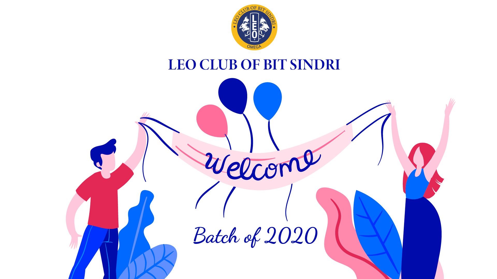

"Leadership is the capacity to translate vision into reality."
A leader is identified by his will to take initiative. It is his willingness to act.
We at Leo club of BIT Sindri, make things happen. Be it serving the society through blood donation camp and book drive or organizing BITANSH and FOYC. We are always ready for it.
The success of Leo club depends on the dedication of its Leos. Leos demonstrate utmost integrity, possess the ability to communicate and inspire others, and recognize the individual needs and interests of club members. These are all virtues of a good leader.
“A mind that is stretched by a new experience can never go back to its old dimensions.”
Nothing ever becomes real untill it is experienced. Experience nurtures growth. We do face challenges too. But Leos are always ready to roll up their sleeves and find a solution.
The club provides you with a platform to experience the vivid dynamism of society, be it on a social ground or a cultural fest. You get to witness a plethora of emotions, joy and satisfaction of creating a difference, the camaraderie and bond with your fellow Leos and most importantly the ' pride' of being called a LEO.
“The bigger the challenge, the bigger the opportunity.”
The opportunity to catalyze a change. As an individual you can have a limited impact but as part of a group you can achieve so much more - in your community, your country, your world.
Working in a team day in day out for various events be it welcoming the freshers,arranging a stage show or lending books to the needy, teaches a lot about growing together. Leos face a variety of situtations. There are various challenges. And so are the opportunities to prove our mettle.
Organizing these events are key to personal development as well.